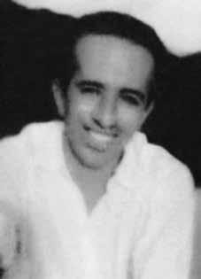

Raimundo
Gonçalves
de Figueiredo
CIRCUNSTÂNCIAS DA MORTE
Raimundo Gonçalves foi baleado na casa de Áurea Bezerra, no Alto da Balança, no bairro Sucupira, em Recife, por agentes policiais do Departamento de Ordem Política e Social de Pernambuco (DOPS/PE) e da Polícia Federal, sendo preso em 27 de abril de 1971. A versão apresentada sobre sua morte em tiroteio foi divulgada em 1º de julho de 1971, no Diário de Pernambuco. Tal versão foi desmentida por Arlindo Felipe da Silva, quem, em depoimento à época da morte, relatou que “Chico” “não morreu reagindo à prisão, foi ferido e levado preso”. Há uma série de informações desencontradas que circundam o caso de Raimundo.
Raimundo Gonçalves foi identificado como José Francisco Severo Ferreira ou Francisco José de Moura pelos órgãos oficiais em diversos documentos. O laudo necroscópico assinado por Antônio Victoriano da Costa e Nivaldo José Ribeiro atesta que José Francisco Severo morreu, em 28 de abril de 1971, em decorrência de “hemorragia interna, decorrente de transfixante de tórax, por projétil de arma de fogo”, havendo outros ferimentos à bala pelo corpo.
José Francisco Severo foi enterrado, aparentemente no cemitério de Santo Amaro. A identidade de José Francisco Severo foi confirmada como sendo de Raimundo Gonçalves em perícia dactiloscópica (exame de digitais) em julho do mesmo ano. Há ainda um mandado de prisão, de agosto de 1971, no qual consta que o Conselho Permanente da Justiça do Exército condenou Francisco José de Moura a dois anos e meio de reclusão e dez anos de suspensão de direitos políticos, sendo que sua morte por obra do Estado ocorrera quatro meses antes desta sentença.
A CNV localizou ficha datiloscópica de Raimundo Gonçalves de Figueiredo oriunda do acervo do DOPS/RJ, na qual consta a informação “morto no Recife”, que tem como última data de registro 25 de agosto de 1971. Seus restos mortais ainda não foram encontrados.
Raimundo Gonçalves was shot at Áurea Bezerra's house, in Alto da Balança, in the Sucupira neighborhood, in Recife, by police agents from the Department of Political and Social Order of Pernambuco (DOPS/PE) and the Federal Police, and was arrested on April 27, 1971. The version presented about his death in a shooting was published on July 1, 1971, in the Diário de Pernambuco. This version was refuted by Arlindo Felipe da Silva, who, in a statement at the time of his death, reported that “Chico” “did not die reacting to the arrest, he was injured and taken into custody”. There is a series of conflicting information surrounding Raimundo's case.
Raimundo Gonçalves was identified as José Francisco Severo Ferreira or Francisco José de Moura by official bodies in several documents. The necroscopic report signed by Antônio Victoriano da Costa and Nivaldo José Ribeiro attests that José Francisco Severo died, on April 28, 1971, as a result of “internal hemorrhage, resulting from a chest transfix, caused by a firearm projectile”, with other gunshot wounds throughout the body.
José Francisco Severo was buried, apparently in the Santo Amaro cemetery. The identity of José Francisco Severo was confirmed as that of Raimundo Gonçalves in a fingerprint examination in July of the same year. There is also an arrest warrant, from August 1971, which states that the Army's Permanent Council of Justice sentenced Francisco José de Moura to two and a half years in prison and ten years of suspension of political rights, and his death by the State occurred four months before this sentence.
The CNV located a fingerprint record of Raimundo Gonçalves de Figueiredo from the DOPS/RJ collection, which contains the information “died in Recife”, the last date of registration being August 25, 1971. His remains have not yet been found.
Raimundo Gonçalves fue baleado en la casa de Áurea Bezerra, en Alto da Balança, en el barrio de Sucupira, en Recife, por agentes del Departamento de Orden Político y Social de Pernambuco (DOPS/PE) y de la Policía Federal, y fue detenido el 27 de abril de 1971. La versión presentada sobre su muerte en un tiroteo fue publicada el 1 de julio de 1971, en el Diário de Pernambuco. Esta versión fue desmentida por Arlindo Felipe da Silva, quien, en un comunicado en el momento de su muerte, informó que “Chico” “no murió reaccionando a la detención, sino que resultó herido y puesto bajo custodia”. Hay una serie de informaciones contradictorias en torno al caso de Raimundo.
Raimundo Gonçalves fue identificado como José Francisco Severo Ferreira o Francisco José de Moura por organismos oficiales en varios documentos. El informe necroscópico firmado por Antônio Victoriano da Costa y Nivaldo José Ribeiro da fe de que José Francisco Severo murió, el 28 de abril de 1971, como consecuencia de “una hemorragia interna, resultante de un transfixio torácico, provocado por un proyectil de arma de fuego”, con otras heridas de bala en todo el cuerpo.
José Francisco Severo fue enterrado, al parecer en el cementerio de Santo Amaro. La identidad de José Francisco Severo fue confirmada como la de Raimundo Gonçalves en un examen dactiloscópico realizado en julio del mismo año. También hay una orden de aprehensión, de agosto de 1971, que señala que el Consejo Permanente de Justicia del Ejército condenó a Francisco José de Moura a dos años y medio de prisión y diez años de suspensión de derechos políticos, y su muerte a manos del Estado se produjo cuatro meses antes de esta sentencia.
La CNV localizó un registro dactiloscópico de Raimundo Gonçalves de Figueiredo del acervo del DOPS/RJ, que contiene la información “murió en Recife”, siendo la última fecha de registro el 25 de agosto de 1971. Sus restos aún no han sido encontrados.